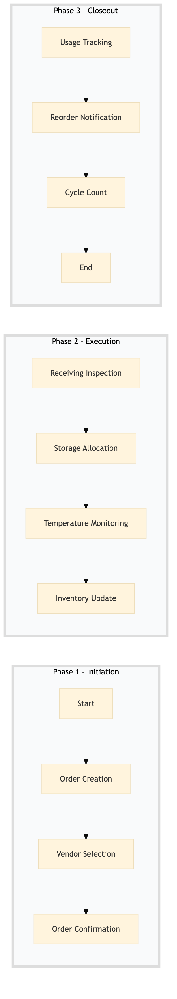

| Role | Steps |
|---|---|
| Procurement Manager | 1.1 1.2 1.3 2.4 3.2 |
| Kitchen Manager | 2.1 2.2 2.3 3.1 3.3 |
| Executive Housekeeper | 2.3 |
| Step | Name | Role | System | Input | Output | KPI | Dec? | Exc? | Pain Point / Risk |
|---|---|---|---|---|---|---|---|---|---|
| 1.1 | Order Creation | Procurement Manager | Birchstreet Procurement | Inventory list with perishable items | Purchase order | < 24 hours | N | Y | Incorrect inventory levels leading to over-ordering or stockouts. |
| 1.2 | Vendor Selection | Procurement Manager | Birchstreet Procurement | Purchase order | Selected vendor list | < 48 hours | Y | N | Vendor reliability and delivery times. |
| 1.3 | Order Confirmation | Procurement Manager | Birchstreet Procurement | Selected vendor list | Confirmed order details | < 24 hours | N | Y | Vendor communication delays. |
| 2.1 | Receiving Inspection | Kitchen Manager | Oracle OPERA Cloud | Delivered items | Inspection report | < 30 minutes | Y | N | Damaged or spoiled products. |
| 2.2 | Storage Allocation | Kitchen Manager | Oracle OPERA Cloud | Inspection report | Storage plan | < 1 hour | N | Y | Inadequate storage space. |
| 2.3 | Temperature Monitoring | Executive Housekeeper | Honeywell INNCOM | Storage plan | Temperature log | < 15 minutes | Y | N | Equipment malfunction. |
| 2.4 | Inventory Update | Kitchen Manager | Oracle OPERA Cloud | Temperature log | Updated inventory record | < 30 minutes | N | Y | Data entry errors. |
| 3.1 | Usage Tracking | Kitchen Staff | Oracle MICROS Simphony | Updated inventory record | Usage report | < 1 hour | N | Y | Overuse or waste of perishable items. |
| 3.2 | Reorder Notification | Procurement Manager | Birchstreet Procurement | Usage report | Reorder request | < 1 day | Y | N | Stock levels dropping below reorder point. |
| 3.3 | Cycle Count | Kitchen Manager | Oracle OPERA Cloud | Reorder request | Cycle count report | < 2 hours | N | Y | Inventory discrepancies. |
This process outlines the management of cold chain and storage in a full-service Marriott hotel's kitchen operations to ensure food safety and quality.